Statistics for Pharmacists
Week 4 · Understanding data
Graduate Pharmaceutical Studies
Understanding data
Week 4
From recorded values to usable information.
From last week to this week
Retrieval
Study design
how observations are generated
→
Data
recorded observations
→
Decisions
only as credible as the data-generating process
Careful planning creates data we can trust. Now we ask how to understand those data.
Now we have the data. Where do we start?
Opening hook
21242631485255 41387276806358 5198103110877970 65605789939678
What do these numbers suggest?
Raw numbers rarely tell their story by themselves.
Humans see patterns before they calculate them
Exploratory analysis starts visually
Before formal analysis, inspect the shape of the data.
Synthetic teaching example: the graphic illustrates statistical reasoning, not a claim about any real pandemic policy or intervention.
Visual pattern → hypothesis → evidence
A bridge back to causality: Pattern recognition is the beginning, not the conclusion
Visual pattern
something appears structured
→
Hypothesis
a possible explanation
→
Evidence
study design + analysis test the explanation
Visualization can generate questions. It does not, by itself, prove causes.
Data are recorded values
Without context, values are disconnected from the world
37.8
value only
120
value only
F
symbol only
Stage 2
label only
A number becomes useful only when we know what it represents.
Context turns data into information
Same values, now connected to meaning
37.8 °C
body temperature
120 mmHg
systolic blood pressure
F
sex variable
Stage 2
disease stage
Information is data interpreted in context.
Data, information, knowledge
Three levels of use
Data
recorded values, symbols or measurements
→
Information
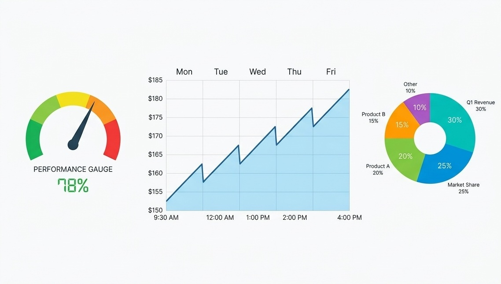
data plus context and meaning
→
Knowledge
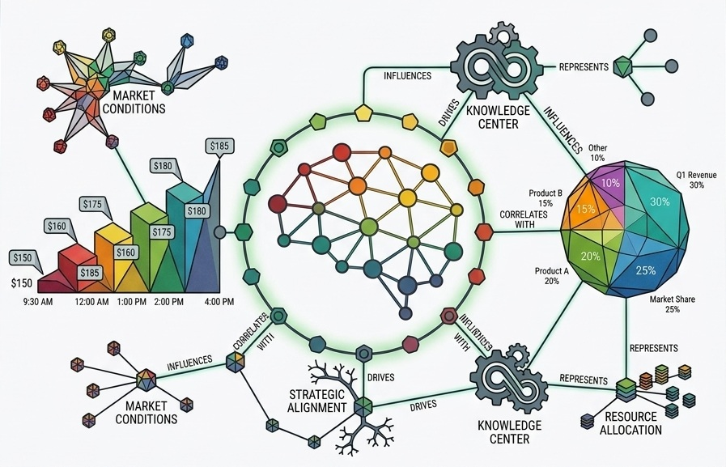
information connected, interpreted and used
Statistics helps us move from recorded values toward usable knowledge.
Information as surprise
A short information-theory side-track
\[ I(x)=-\log_2 \mathbb{P}(x) \]
\(P(x)=1\)
0 bits
\(P(x)=1/2\)
1 bit
\(P(x)=1/8\)
3 bits
Rare events are more surprising, so observing them carries more information.
Try it: probability and surprise
Interactive concept slide
probability
0.50
0.50
surprise
1.00 bits
1.00 bits
As probability goes down, surprise goes up.
Entropy is expected surprise
Average information content
\[ H(X)=-\sum_i \mathbb{P}(x_i)\log_2 \mathbb{P}(x_i) \]
Predictable source
AAAAAAAAABAAAAAA
low entropy
Less predictable source
ABBAABAABBABBAAB
higher entropy
Entropy and randomness
Shared mathematics across information and physical states
Shannon entropy
uncertainty over possible messages or symbols
high entropy → hard to predict
Statistical-mechanical entropy
uncertainty over possible microstates
shared mathematical structure
Both quantify uncertainty over possible states.
Claude Elwood Shannon
Types of variables
Part II
Types of variables
We now see the different data types and their characteristics.
First question: what kind of variable is it?
Data types determine meaningful summaries and plots
Categorical
Nominal
names, no order
names, no order
Ordinal
ordered categories
ordered categories
Numerical
Interval
differences meaningful
differences meaningful
Ratio
ratios meaningful
ratios meaningful
The data type tells us what operations make sense.
Nominal and ordinal examples
Categorical variables
Nominal
formulation type · sex · genotype · adverse-event category
no intrinsic order
Ordinal
disease stage · toxicity grade · response category · pain scale
ordered categories
Nominal categories of “A”, “B”, “0” blood group have no inherent order or distance.
Ordinal categories of “severe”, “normal”, “moderate” still have no inherent distance (difference and sum are not meaningful), but there is inherent order.
Interval and ratio examples
Numerical variables
Interval
temperature in °C · calendar year
differences meaningful
Ratio
mass · concentration · dose · time · Kelvin temperature
differences and ratios meaningful
absolute zero exists
A temperature of 20 °C is not “twice as hot” as 10 °C; a 20 mg dose is twice a 10 mg dose.
Note how Celsius scale has no absolute zero point (it can be positive and negative), while Kelvin has an absolute zero.
But not every value that can be negative is automatically interval: for electric charge the negative does not signify magnitude, but rather direction, so it is still ratio.
Which summaries make sense?
A bridge back to Week 3
Variable type
Frequency
Mode
Median
Mean
Nominal
✓
✓
—
—
Ordinal
✓
✓
✓
usually no
Numerical
✓
✓
✓
✓
Try it: classify the variable
Interactive data-type checkpoint
blood group
Choose the best type.
Data structure
Part III
Data structure
We now see how data should be structured.
Structured and unstructured data
This course mostly uses structured tabular data
Structured
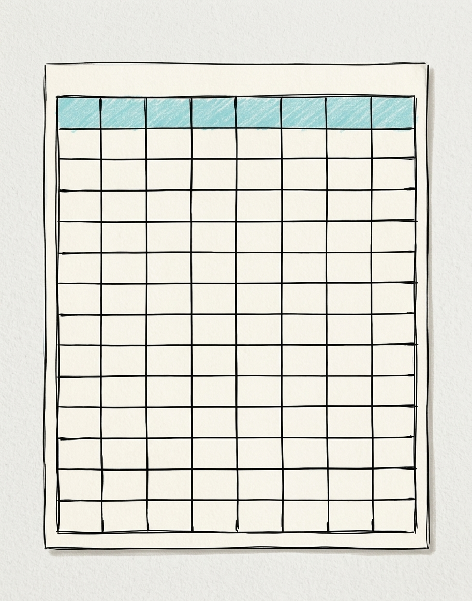
patient table
laboratory results table
clinical-trial spreadsheet
Unstructured
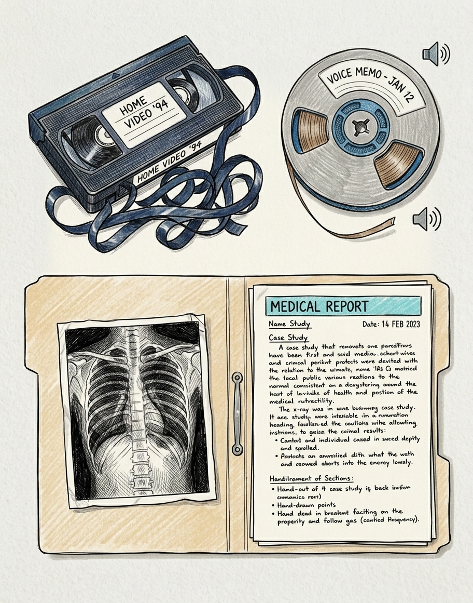
free-text clinical note
image
audio / scanned report
Anatomy of a data table
Rows, columns and cells
patientID
sex
stage
diabetes
weight_kg
height_cm
bp_mmHg
bodyT_C
P01
F
1
false
58
164
118
36.8
P02
M
2
false
82
180
142
37.1
P03
F
3
true
72
169
155
38.0
Rows are observations; columns are variables; cells are values.
We will reuse this type of structure throughout Week 4.
Wide format → Long format
Humans often like reading repeated measurements side-by-side → Long format often makes grouping and plotting easier
patient
day1
day2
day3
P01
120
124
122
P02
142
139
137
→
patient
day
bp_mmHg
P01
1
120
P01
2
124
P01
3
122
P02
1
142
P02
2
139
P02
3
137
Wide format keeps multiple measurement occasions in separate columns.
Transformation creates derived variables
Raw variables can create new variables
weight = 72 kg
height = 1.78 m
→
BMI = 22.7
\[ BMI=\frac{\mathrm{weight}_{kg}}{\mathrm{height}_m^2} \]
Transformation changes representation
The patient does not change; the data representation changes
Units
kg → g
Temperature scale
°C → K
Log scale
concentration → log concentration
Derived variable
weight + height → BMI
Why log-transform?
Multiplicative variation can become additive structure
Raw scale
1101001000
log10 scale
0123
Missing values are not just empty cells
Missingness has causes
patient
visit
bp_mmHg
temp_C
reason?
P01
1
118
36.8
observed
P01
2
NA
37.0
?
P02
1
142
NA
?
measurement failed
patient skipped visit
not applicable
data-entry loss
dropout
Handling missing values
No method is automatically safe
Delete rows
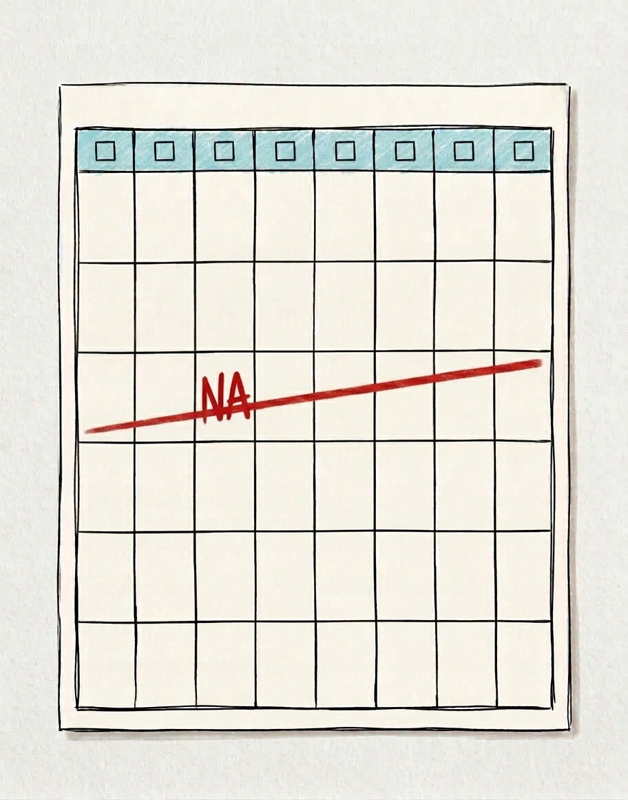
simple, but can discard information or bias results
Simple imputation
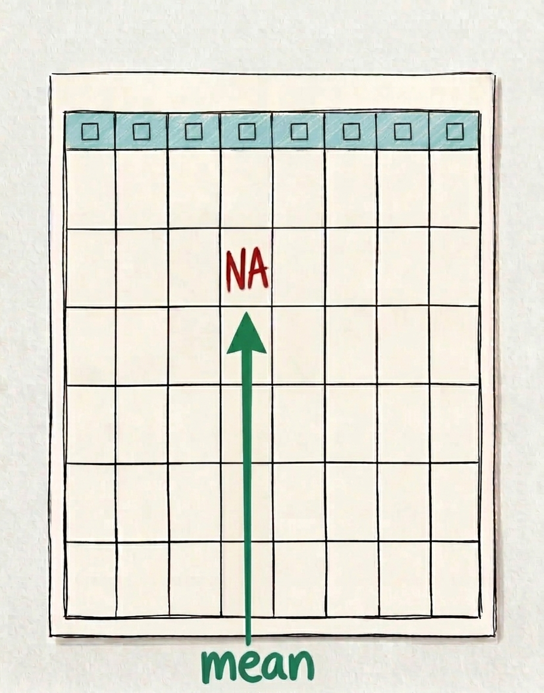
mean · median · mode
Similarity/model-based
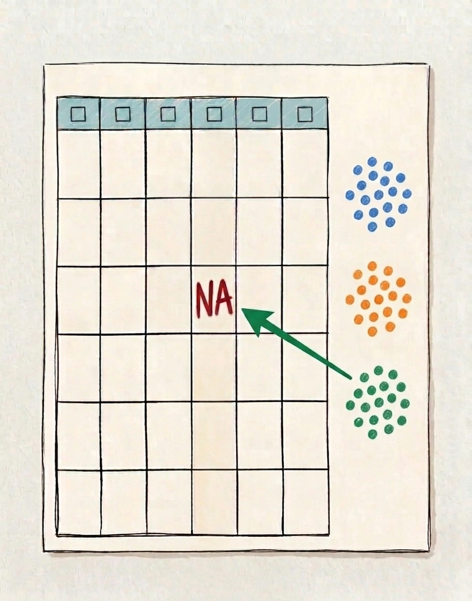
use related variables or similar records
Carry forward
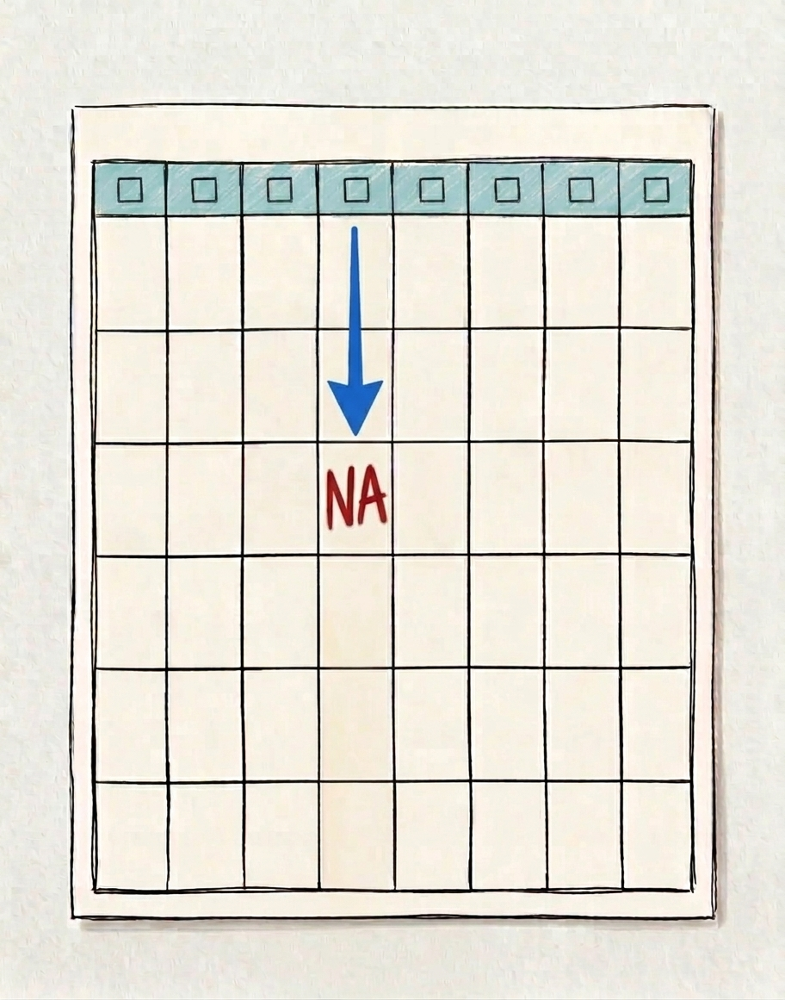
useful for time-series data
The reason values are missing matters as much as the replacement rule.
Tiny imputation demonstration
The chosen rule changes the inserted value
Observed series
5, 6, NA, 7, 20
Mean imputation
NA → 9.5
pulled by the outlier
Median imputation
NA → 6.5
more robust here
Databases
Part IV
Databases
We now see how data is stored and retrieved from databases.
Queries are set operations
Database logic returns to Week 1 set theory
A: diabetes
B: high BP
AND
\(A\cap B\)
patients satisfying both filters
OR
\(A\cup B\)
patients satisfying either filters
Patient search dashboard
Interactive data-query exercise
matched—patients
Joining tables: left join
Attach matching information while keeping the left table
ID
sex
stage
P01
F
1
P02
M
2
P03
F
3
patients
ID
lab_value
P01
32
P03
51
labs
→
ID
sex
stage
lab_value
P01
F
1
32
P02
M
2
NA
P03
F
3
51
left join
Joining tables: full join
Keep every record from both sides
ID
sex
stage
P01
F
1
P02
M
2
patients
ID
lab_value
P01
32
P03
51
labs
→
ID
sex
stage
lab_value
P01
F
1
32
P02
M
2
NA
P03
NA
NA
51
full join
Graphs
Part V
The second ingredient to descriptive statistics
We now see how data are visualized.
Visualization depends on variable types
Main concept of the week
Selection
Useful view
1 categorical
frequency table + bar plot
2 categorical
contingency table + stacked bar plot
1 numerical
summary + histogram + boxplot
2 numerical
scatter plot
categorical + numerical
grouped boxplot
Rule of thumb
First identify variable types, then choose the graphical encoding.
Try it: choose what to visualize
Interactive visualization laboratory
Select one or more variables.
The same data can tell different visual stories
Axis choices matter
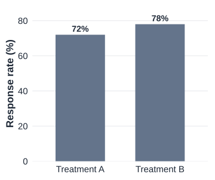
axis starts at 0
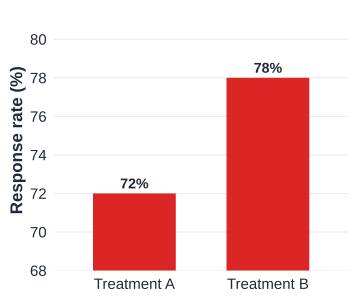
truncated y-axis exaggerates differences
Visualization is analysis, not decoration
Choose encodings that match the data and question
Too many pie slices
hard to compare 18 categories
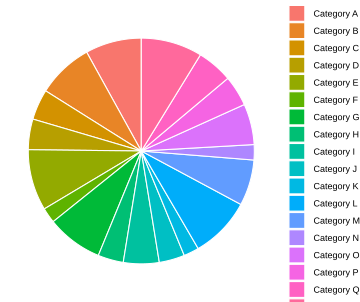
Line plot for unordered categories
implies continuity or order that may not exist
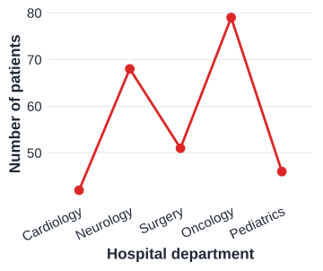
3D bars
perspective distorts values
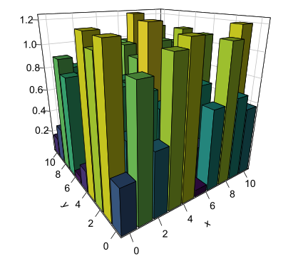
A plot is an analytical choice, not decoration.
Exercise: what data type is this?
Disease stage I, II, III is best described as…
Choose an answer.
Exercise: what should you plot?
Compare systolic BP distributions between disease stages.
Choose an answer.
Exercise: what does this query return?
diabetes = TRUE AND BP = high returns…
Choose an answer.
Exercise: what went wrong?
Data cleaning checkpoint
patient
sex
stage
bp
temp
problem?
P01
F
1
118
36.8
—
P02
M
2
high
37.1
text in numeric column
P03
F
3
155
999
coded missing value
P03
F
3
155
38.0
duplicate patient
P04
M
1
126
24.0
impossible value?
What did we learn?
Week 4 synthesis
Good data begin with a credible data-generating process.
Structure makes data usable: rows, columns, variables and values.
Cleaning and transformation change what later analysis can mean.
Visualization exposes shape, patterns and problems before formal inference.
Next week: why averages and distributions become predictable when samples grow.
Statistics 101 · Week 4